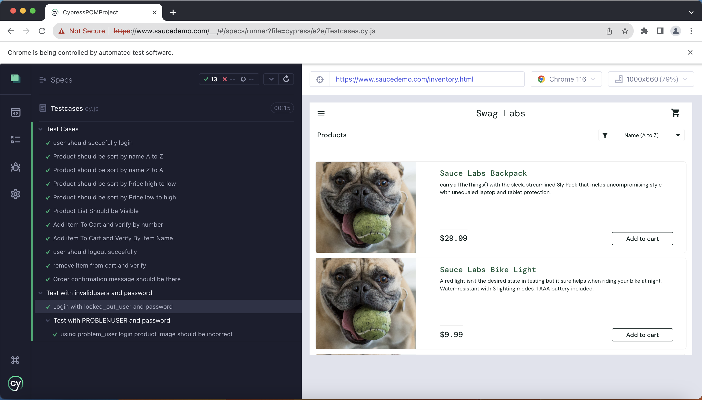
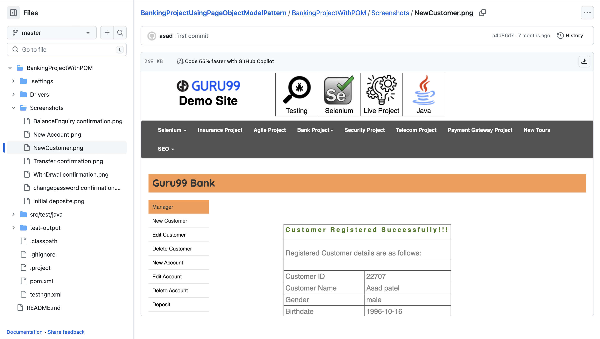
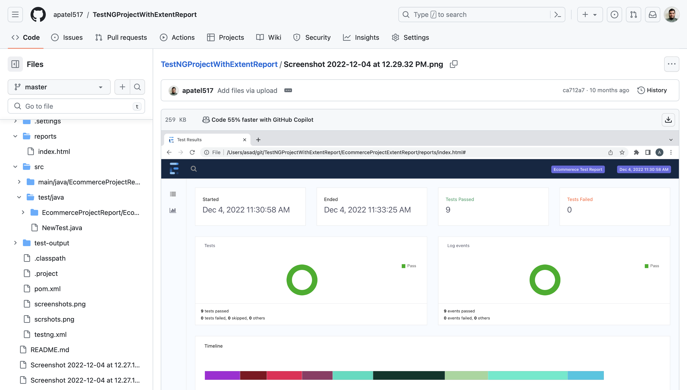
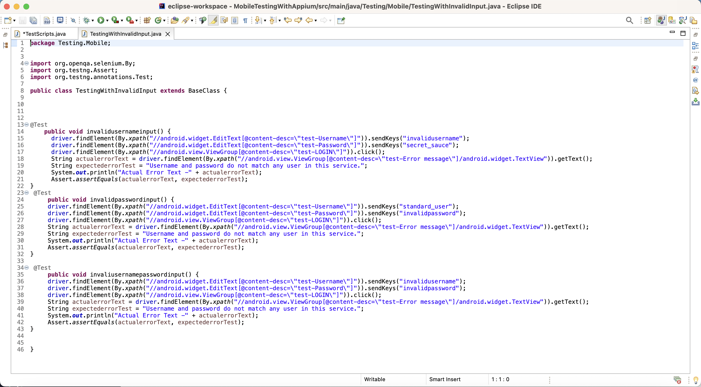

Software Qality Assurance Engineer
I am actively working on automation testing projects to enhance efficiency. In automation, I work on framework development and test script creation using various automation tools like Selenium, Cucumber, TestNG, Cypress, JMeter, and Postman.
I specialize in both manual and automated testing methodologies. I meticulously design test cases to comprehensively evaluate software functionalities and detect potential defects. My methodical approach ensures that every aspect of the application is thoroughly tested
I am actively working on mobile testing projects to enhance efficiency. In mobile testing, I work on framework development and test script creation for mobile applications using various mobile testing tools like Selenium, Appium, Appium Inspector, Android Studio, Cypress, XCUITest, UI Automator, and Xcode.
Software Qality Assurance Engineer
A dedicated Software Quality Assurance (QA) Engineer enthusiast with a passion for ensuring software reliability and functionality. While I have been gone through a vigorous training and I am at the beginning of my QA journey my commitment to learning and self-improvement has been my driving force
As a self-learner, I've embarked on a journey to explore the fascinating world of software testing. My path has been paved with curiosity and determination, and I've had the privilege of working on a variety of self-learning projects that have allowed me to hone my skills and gain valuable experience.
This project allowed me to demonstrate my testing skills and showcase my proficiency in Tools and Technologies like JavaScript, Git, GitHub Cypress, a powerful end-to-end testing framework.
This project exemplifies my expertise in automation testing, utilizing Tools and Technologies like Selenium WebDriver, Java, TestNG, Maven, Git, GitHub and Page Object Model (POM) design pattern. It demonstrates my ability to create maintainable and efficient test automation solutions for complex web applications, ultimately contributing to the success of the banking website.
This project demonstrates my proficiency in automation testing, utilizing Tools and Technologies like Selenium WebDriver, Java, TestNG, Page Object Model (POM), Extent Reports, Maven, Git, GitHub . It showcases my ability to build and maintain robust, data-driven automation frameworks for complex web applications, ultimately contributing to the success of the e-commerce platform.
This project showcases my proficiency in mobile app testing, utilizing tools like Appium,Appium Inspector,XCUITest,UI Automator,Appium UI Automator,Android Studio, and Xcode. It highlights my ability to ensure the functionality, compatibility, and usability of mobile applications, ultimately enhancing the user experience of the e-commerce platform's mobile app.
